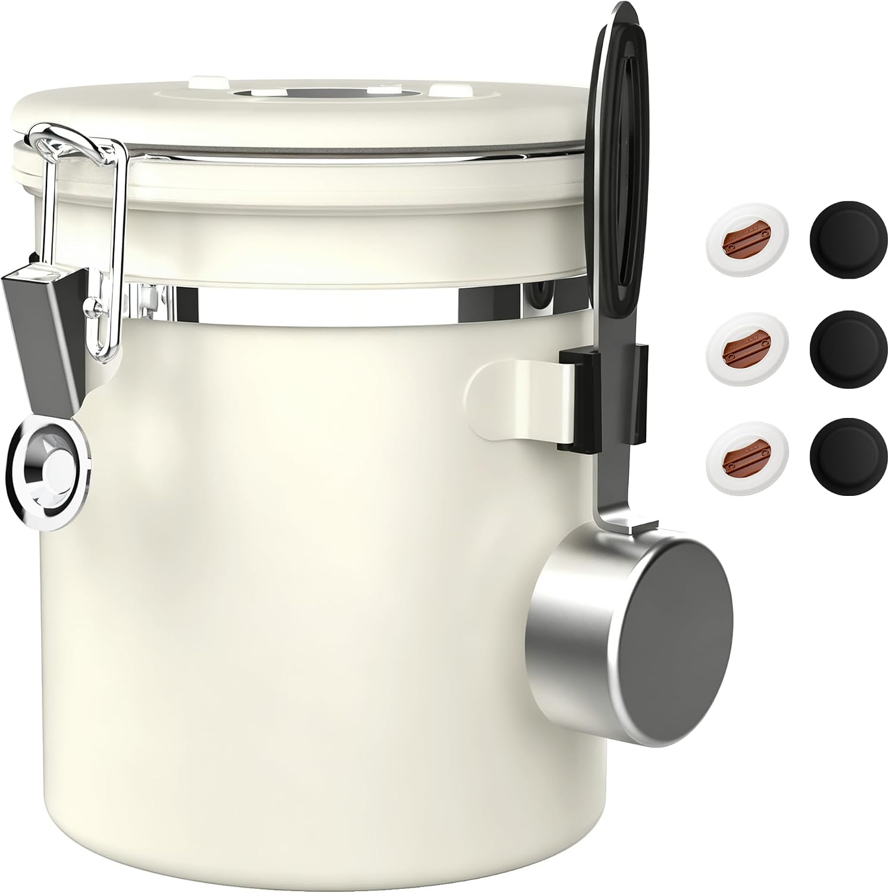
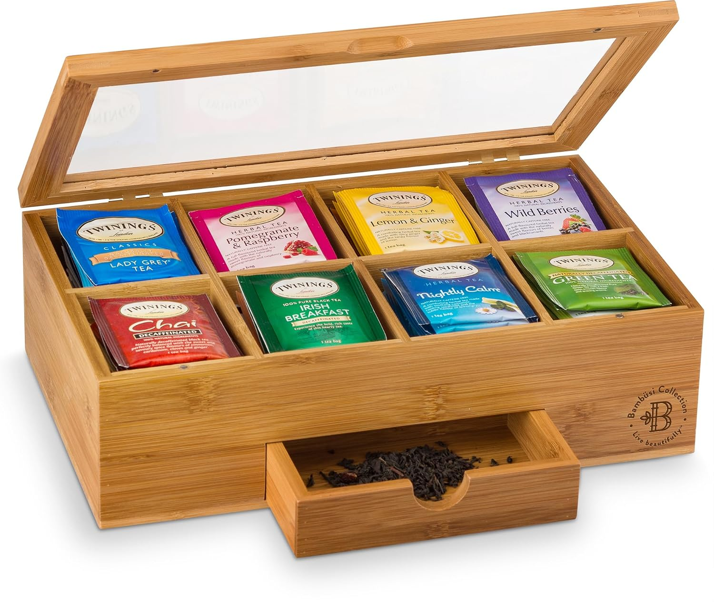
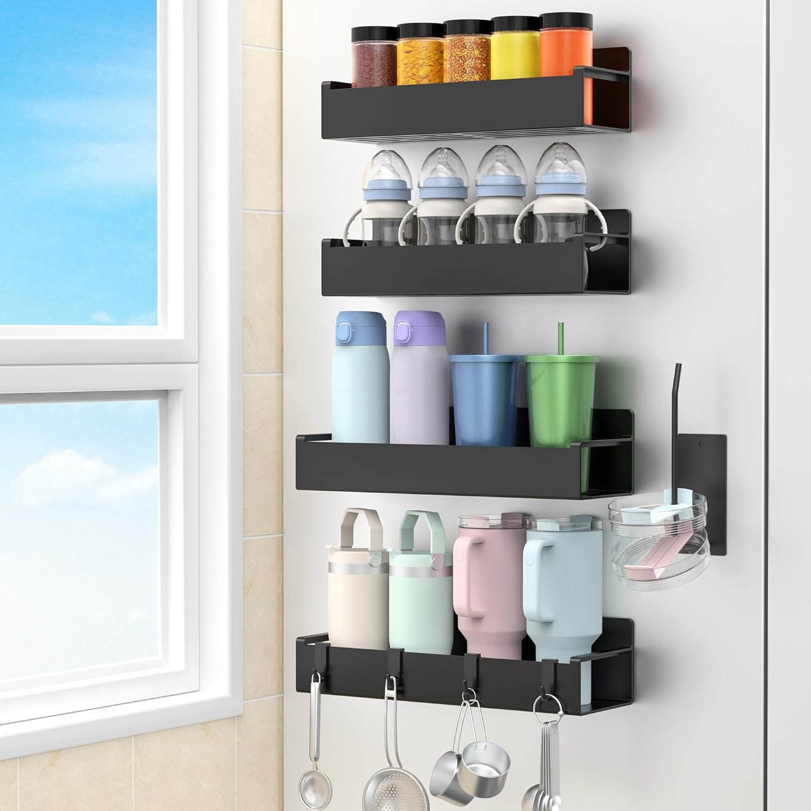
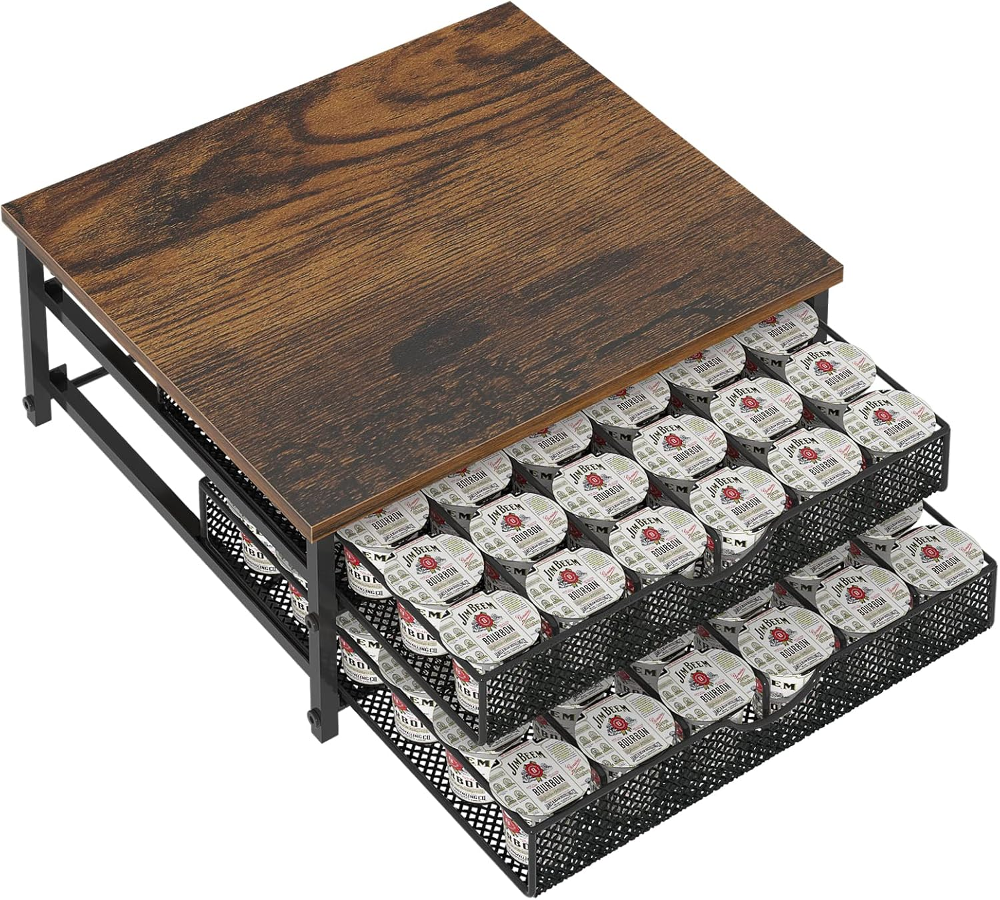
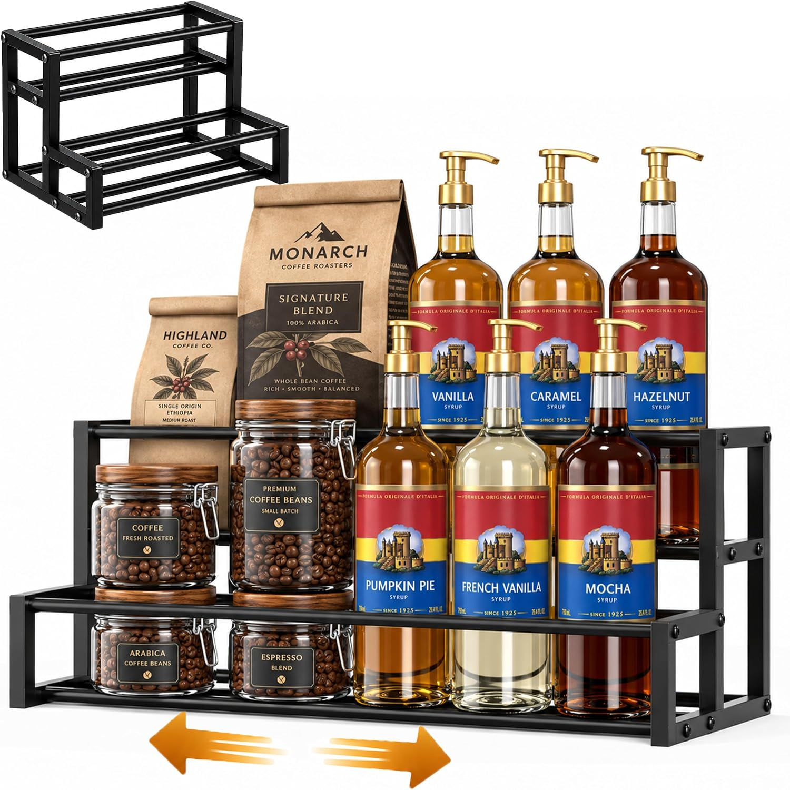
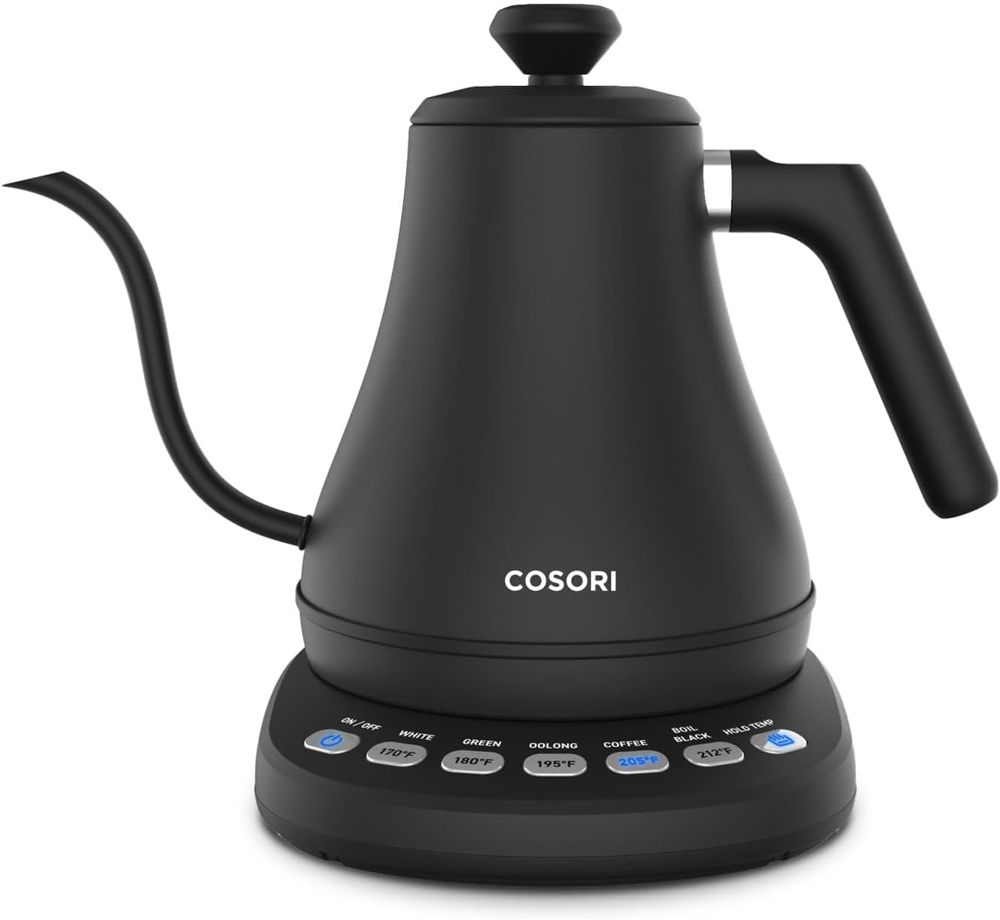
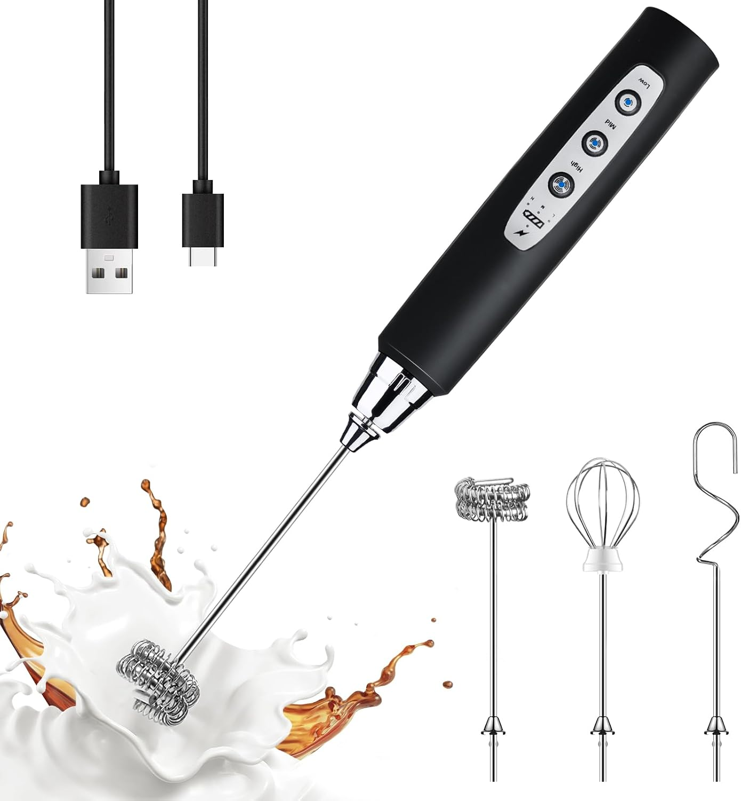
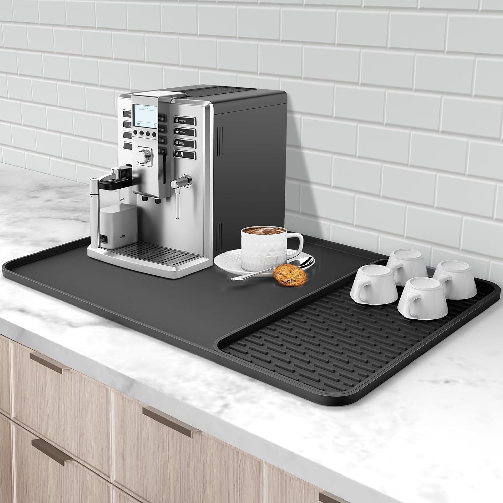

You don’t need a massive kitchen remodel to enjoy café-quality drinks at home. All you need is three square feet of counter space and the right tools. Whether you’re a pour-over purist or a pod-and-go commuter, organizing a dedicated "brew station" turns your morning rush into a mindful ritual. Here are the 8 essentials to build a beautiful, functional coffee and tea corner that stays clutter-free.
Table of Contents
1. The Bean & Leaf Vault
Freshness is the foundation of a good cup. Leaving beans in their original bag or tea bags scattered in a drawer leads to stale flavors and visual clutter. Consolidating them into airtight, dedicated vessels elevates both the taste and the aesthetic of your station.

ShanSon Airtight Coffee Canister with Date Tracker
A food-grade 304 stainless steel container featuring an innovative CO₂ valve system to release gas or block moisture. Includes a built-in date tracker and scoop, keeping beans fresh and aromatic by blocking harmful light.
View on Amazon
8-Compartment Bamboo Tea Bag Organizer Box with Drawer
A handcrafted bamboo storage box featuring a clear acrylic lid with a magnetic close and 8 compartments to sort tea bags by flavor. Includes a built-in pull-out drawer for extra storage of loose tea, honey sticks, or sweeteners.
View on Amazon2. The Space-Saving Trick
When you only have three square feet, vertical and hidden storage are your best friends. Instead of letting mugs and pods consume valuable counter real estate, we push them off the counter entirely.

HuggieGems Magnetic Water Bottle & Mug Holder for Fridge (4-Pack)
Strong magnetic hooks that stick directly to the side of your fridge or any metal surface. A brilliant space-saving hack to hang mugs, cups, or water bottles off the counter, keeping your café station clean and accessible.
View on Amazon
Rustic Wooden Coffee Pod Drawer Organizer (72 Capacity)
A farmhouse-style wood and metal drawer that holds up to 72 single-serve K-Cup pods. Designed to sit neatly under your coffee maker, it provides smooth-gliding storage to sort by flavor and grab your morning brew in seconds.
View on Amazon3. The Flavor Bar
If you love vanilla lattes or caramel macchiatos, syrup bottles can quickly turn a coffee station into a sticky, chaotic mess. Corral them into a single, expandable footprint so you can see your options at a glance without knocking over a tower of glass bottles.

Expandable 2-Tier Coffee Syrup Rack Organizer (Holds 12 Bottles)
An adjustable metal countertop rack that expands from 12.2 to 22 inches to hold up to 12 standard 750mL syrup bottles. Keeps your flavor bar visible, organized, and prevents sticky rings on your coffee station counter.
View on Amazon4. The Brew Station
This is where the magic happens. The tools here need to offer precision, speed, and easy cleanup. A dedicated mat defines the physical boundary of your café corner while protecting your countertops from heat and spills.

Cosori Electric Gooseneck Kettle with Temperature Control (0.8L)
A precision pour-over kettle featuring 5 precise temperature presets and a 1-hour keep-warm function. The ergonomic handle and refined spout allow for a steady, controlled pour, while the 304 stainless steel interior ensures pure taste.
View on Amazon
YUSWKO Rechargeable Handheld Milk Frother Wand (3 Speeds)
A USB-rechargeable electric whisk with 3 speed settings and 3 detachable stainless steel heads for frothing milk, mixing powders, or beating eggs. Creates creamy café-quality latte foam in 15-20 seconds without the noise.
View on Amazon
Silicone Coffee Bar Mat with Detachable Dish Drying Rack
A 24x16 inch heat-resistant silicone mat with a raised edge to contain spills and protect countertops. Features an innovative detachable drying rack section to air-dry cups, spoons, and filters right next to your coffee maker.
View on AmazonAffiliate Disclosure: As an Amazon Associate, The Organized Nest earns from qualifying purchases. This does not affect the price you pay. We only recommend products we believe will be useful to our readers.